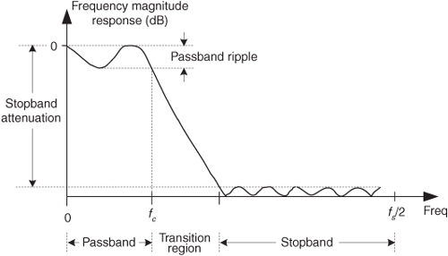

F Digital Filter Terminology
The first step in becoming familiar with digital filters is to learn to speak the language used in the filter business. Fortunately, the vocabulary of digital filters corresponds very well to the mother tongue used for continuous (analog) filters—so we don’t have to unlearn anything that we already know. This appendix is an introduction to the terminology of digital filters.
Allpass filter—an IIR filter whose magnitude response is unity over its entire frequency range, but whose phase response is variable. Allpass filters are typically appended in a cascade arrangement following a standard IIR filter, H1(z), as shown in Figure F-1.
Figure F-1 Typical use of an allpass filter.
An allpass filter, Hap(z), can be designed so that its phase response compensates for, or equalizes, the nonlinear phase response of an original IIR filter[1–3]. Thus, the phase response of the combined filter, Hcombined (z), is more linear than the original H1(z), and this is particularly desirable in communications systems. In this context, an allpass filter is sometimes called a phase equalizer.
Allpass filters have the property that the numerator polynomial coefficients in the filter’s H(z) transfer function are a reverse-order version of the denominator polynomial coefficients. For example, the following transfer function describes a 2nd-order allpass filter:

where the numerator polynomial coefficients are [B, A, 1] and the denominator polynomial coefficients are [1, A, B].
Attenuation—an amplitude loss, usually measured in dB, incurred by a signal after passing through a digital filter. Filter attenuation is the ratio, at a given frequency, of the signal amplitude at the output of the filter divided by the signal amplitude at the input of the filter, defined as
For a given frequency, if the output amplitude of the filter is smaller than the input amplitude, the ratio in Eq. (F-2) is less than one, and the attenuation is a negative number.
Band reject filter—a filter that rejects (attenuates) one frequency band and passes both a lower- and a higher-frequency band. Figure F-2(a) depicts the frequency response of an ideal band reject filter. This filter type is sometimes called a notch filter.
Figure F-2 Filter symbols and frequency responses: (a) band reject filter; (b) bandpass filter.
Bandpass filter—a filter, as shown in Figure F-2(b), that passes one frequency band and attenuates frequencies above and below that band.
Bandwidth—the frequency width of the passband of a filter. For a lowpass filter, the bandwidth is equal to the cutoff frequency. For a bandpass filter, the bandwidth is typically defined as the frequency difference between the upper and lower 3 dB points.
Bessel function—a mathematical function used to produce the most linear phase response of all IIR filters with no consideration of the frequency magnitude response. Specifically, filter designs based on Bessel functions have maximally constant group delay.
Butterworth function—a mathematical function used to produce maximally flat filter magnitude responses with no consideration of phase linearity or group delay variations. Filter designs based on a Butterworth function have no amplitude ripple in either the passband or the stopband. Unfortunately, for a given filter order, Butterworth designs have the widest transition region of the most popular filter design functions.
Cascaded filters—a filtering system where multiple individual filters are connected in series; that is, the output of one filter drives the input of the following filter as illustrated in Figures F-1 and 6-37(a).
Center frequency (f0)—the frequency lying at the midpoint of a bandpass filter. Figure F-2(b) shows the fo center frequency of a bandpass filter.
Chebyshev function—a mathematical function used to produce passband or stopband ripples constrained within fixed bounds. There are families of Chebyshev functions based on the amount of ripple, such as 1 dB, 2 dB, and 3 dB of ripple. Chebyshev filters can be designed to have a frequency response with ripples in the passband and a flat stopband (Chebyshev Type I), or flat passbands and ripples in the stopband (Chebyshev Type II). Chebyshev filters cannot have ripples in both the passband and the stopband. Digital filters based upon Chebyshev functions have steeper transition region roll-off but more nonlinear-phase response characteristics than, say, Butterworth filters.
CIC filter—cascaded integrator-comb filter. CIC filters are computationally efficient, linear-phase, recursive, FIR, lowpass filters used in sample rate change applications. Those filters are discussed in Chapter 10.
Coefficients—see filter coefficients.
Cutoff frequency—the highest passband frequency for lowpass filters (and the lower passband frequency for highpass filters) where the magnitude response is within the peak-peak passband ripple region. Figure F-3 illustrates the fc cutoff frequency of a lowpass filter.
Figure F-3 A lowpass digital filter frequency response. The stopband relative amplitude is –20 dB.

Decibels (dB)—a unit of attenuation, or gain, used to express the relative voltage or power between two signals. For filters, we use decibels to indicate cutoff frequencies (−3 dB) and stopband signal levels (−20 dB) as illustrated in Figure F-3. Appendix E discusses decibels in more detail.
Decimation filter—a lowpass digital FIR filter where the output sample rate is less than the filter’s input sample rate. As discussed in Section 10.1, to avoid aliasing problems, the output sample rate must not violate the Nyquist criterion.
Digital filter—computational process, or algorithm, transforming a discrete sequence of numbers (the input) into another discrete sequence of numbers (the output) having a modified frequency-domain spectrum. Digital filtering can be in the form of a software routine operating on data stored in computer memory or can be implemented with dedicated hardware.
Elliptic function—a mathematical function used to produce the sharpest roll-off for a given number of filter taps. However, filters designed by using elliptic functions, also called Cauer filters, have the poorest phase linearity of the most common IIR filter design functions. The ripples in the passband and stopband are equal with elliptic filters.
Envelope delay—see group delay.
Filter coefficients—the set of constants, also called tap weights, used to multiply against delayed signal sample values within a digital filter structure. Digital filter design is an exercise in determining the filter coefficients that will yield the desired filter frequency response. For an FIR filter, by definition, the filter coefficients are the impulse response of the filter.
Filter order—a number describing the highest exponent in either the numerator or denominator of the z-domain transfer function of a digital filter. For tapped-delay line FIR filters, there is no denominator in the transfer function and the filter order is merely the number of delay elements used in the filter structure. Generally, the larger the filter order, the better the frequency-domain performance, and the higher the computational workload, of the filter.
Finite impulse response (FIR) filter—defines a class of digital filters that have only zeros on the z-plane. The key implications of this are: (1) FIR filter impulse responses have finite time durations, (2) FIR filters are always stable, and (3) FIR filters can have exactly linear phase responses (so long as the filters’ impulse response samples are symmetrical, or antisymmetrical). For a given filter order, digital FIR filters have a much more gradual transition region roll-off (poorer performance) than digital IIR filters. FIR filters can be implemented with both nonrecursive (tapped-delay line) and recursive (CIC filters, for example) structures.
Frequency magnitude response—a frequency-domain description of how a filter interacts with input signals. The frequency magnitude response in Figure F-3 is a curve of filter attenuation (in dB) versus frequency. Associated with a filter’s magnitude response is a phase response.
Group delay—the negative of the derivative of a filter’s frequency-domain phase response with respect to frequency, G(ω) = –d(Hø(ω))/d(ω). If a filter’s complex frequency response is represented in polar form as
where digital frequency ω is continuous and ranges from –π to π radians/sample, corresponding to a cyclic frequency range of –fs/2 to fs/2 Hz, then the filter’s group delay is defined as
Because the dimensions of Hø(ω) are radians, and the dimensions of ω are radians/sample, the dimensions of group delay G(ω) are time measured in samples.
If a filter’s complex frequency response is expressed in terms of a normalized frequency variable as
where frequency f is continuous and is in the range of –0.5 ≤ f ≤ 0.5, then the group delay G(f) is defined as
The concept of group delay deserves additional explanation beyond a simple algebraic definition. For an ideal lowpass filter, for example, the frequency-domain phase response will be linear and the group delay would be constant. Group delay can also be thought of as the propagation time delay of the envelope (the information) of an amplitude-modulated (AM) signal as it passes through a digital filter. (In this context, group delay is often called envelope delay.) If a filter’s passband group delay is not constant (a nonlinear-phase filter), then group delay distortion occurs because signals at different frequencies take different amounts of time (a different number of sample time intervals) to pass through the filter.
Half-band filter—a type of FIR filter whose transition region is centered at one-quarter of the sampling rate, or fs/4. Specifically, the end of the passband and the beginning of the stopband are equally spaced about fs/4. Due to their frequency-domain symmetry, half-band filters are often used in decimation filtering schemes because half of their time-domain coefficients are zero. This reduces the number of necessary filter multiplications, as described in Section 5.7.
Highpass filter—a filter that passes high frequencies and attenuates low frequencies, as shown in Figure F-4(a). We’ve all experienced a kind of highpass filtering in our living rooms. Notice what happens when we turn up the treble control (or turn down the bass control) on our home stereo systems. The audio amplifier’s normally flat frequency response changes to a kind of analog highpass filter, giving us that sharp and tinny sound as the high-frequency components of the music are being accentuated.
Figure F-4 Filter symbols and frequency responses: (a) highpass filter; (b) low pass filter.
Impulse response—a digital filter’s time-domain output sequence when the input is a single unity-valued sample (impulse) preceded and followed by zero-valued samples. A digital filter’s frequency-domain response can be calculated by taking the discrete Fourier transform of the filter’s time-domain impulse response[4].
Infinite impulse response (IIR) filter—a class of digital filters that may have both zeros and poles on the z-plane. As such, IIR filters are not guaranteed to be stable and almost always have nonlinear phase responses. For a given filter order (number of IIR feedback taps), IIR filters have a much steeper transition region roll-off than digital FIR filters.
Linear-phase filter—a filter that exhibits a constant change in phase angle (degrees) as a function of frequency. The resultant filter phase plot versus frequency is a straight line. As such, a linear-phase filter’s group delay is a constant. To preserve the integrity of their information-carrying signals, linear phase is an important criterion for filters used in communications systems.
Lowpass filter—a filter that passes low frequencies and attenuates high frequencies as shown in Figure F-4(b). By way of example, we experience lowpass filtering when we turn up the bass control (or turn down the treble control) on our home stereo systems, giving us that dull, muffled sound as the high-frequency components of the music are being attenuated.
Nonrecursive filter—a digital filter implementation where no filter output sample is ever retained for later use in computing a future filter output sample. Such filters have no “feedback” signal paths.
Notch filter—see band reject filter.
Order—see filter order.
Passband—that frequency range over which a filter passes signal energy with minimum attenuation, usually defined as the frequency range where the magnitude response is within the peak-peak passband ripple region, as depicted in Figure F-3.
Passband ripple—peak-peak fluctuations, or variations, in the frequency magnitude response within the passband of a filter as illustrated in Figure F-3.
Phase response—the difference in phase, at a particular frequency, between an input sinewave and the output sinewave at that frequency. The phase response, sometimes called phase delay, is usually depicted by a curve showing the filter’s phase shift versus frequency. Section 5.8 discusses digital filter phase response in more detail.
Phase wrapping—an artifact of arctangent software routines, used to calculate phase angles, that causes apparent phase discontinuities. When a true phase angle is in the range of –180o to –360o, some software routines automatically convert those angles to their equivalent positive angles in the range of 0o to +180o. Section 5.8 illustrates an example of phase wrapping when the phase of an FIR filter is calculated.
Quadrature filter—a dual-path digital filter operating on complex signals, as shown in Figure F-5. One filter operates on the in-phase i(n) data, and the other filter processes the quadrature-phase q(n) signal data. Quadrature filtering is normally performed on complex signals, whose spectra are centered at zero Hz, using lowpass digital filters.
Figure F-5 Two lowpass filters used to implement quadrature filtering.
Recursive filter—a digital filter implementation where current filter output samples are retained for later use in computing future filter output samples. Such filters have “feedback” signal paths.
Relative attenuation—attenuation measured relative to the largest magnitude value. The largest signal level (minimum attenuation) is typically assigned the reference level of zero dB, as depicted in Figure F-3, making all other magnitude points on a frequency-response curve negative dB values.
Ripple—refers to fluctuations (measured in dB) in the passband, or stopband, of a filter’s frequency-response curve. Elliptic and Chebyshev-based filters have equiripple characteristics in that their ripple is constant across their passbands. Bessel- and Butterworth-derived filters have no ripple in their passband responses. Ripples in the stopband response are sometimes called out-of-band ripple.
Roll-off—a term used to describe the steepness, or slope, of the filter response in the transition region from the passband to the stopband. A particular digital filter may be said to have a roll-off of 12 dB/octave, meaning that the second-octave frequency would be attenuated by 24 dB, and the third-octave frequency would be attenuated by 36 dB, and so on.
Shape factor—a term used to indicate the steepness of a filter’s roll-off. Shape factor is normally defined as the ratio of a filter’s passband width divided by the passband width plus the transition region width. The smaller the shape factor value, the steeper the filter’s roll-off. For an ideal filter with a transition region of zero width, the shape factor is unity. The term shape factor is also used to describe analog filters.
Stopband—that band of frequencies attenuated by a digital filter. Figure F-3 shows the stopband of a lowpass filter.
Structure—a fancy term meaning the block diagram, the signal-flow implementation, of a digital filter. For example, lowpass moving average filters may be built (implemented) with both nonrecursive structures and recursive structures.
Tap—a multiplication operation inside a digital filter that computes the product of a single data value times a single filter coefficient.
Tap weights—see filter coefficients.
Tchebyschev function—see Chebyshev function.
Transfer function—a mathematical expression of the ratio of the output of a digital filter divided by the input of the filter as expressed in a transform domain (e.g., z-domain, Laplace, frequency). Given the transfer function, we can determine the filter’s frequency magnitude and phase responses.
Transition region—the frequency range over which a filter transitions from the passband to the stopband. Figure F-3 illustrates the transition region of a lowpass filter. The transition region is sometimes called the transition band.
Transversal filter—in the field of digital filtering, transversal filter is another name for FIR filters implemented with the nonrecursive structures described in Chapter 5.
Zero-phase filter—an off-line (because it operates on a block of filter input samples) filtering method which cancels the nonlinear phase response of an IIR filter. Section 13.12 details this non-real-time filtering technique.
References
[1] Rabiner, L. R., and Gold, B. The Theory and Application of Digital Signal Processing, Prentice Hall, Englewood Cliffs, New Jersey, 1975, pp. 206, 273, and 288.
[2] Oppenheim, A. V., and Schafer, R. W. Discrete Time Signal Processing, Prentice Hall, Englewood Cliffs, New Jersey, 1989, pp. 236 and 441.
[3] Laakso, T. I., et al. “Splitting the Unit Delay,” IEEE Signal Processing Magazine, January 1996, p. 46.
[4] Pickerd, J. “Impulse-Response Testing Lets a Single Test Do the Work of Thousands,” EDN, April 27, 1995.